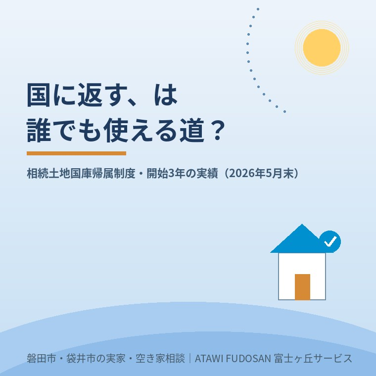

2026年7月14日｜カテゴリ：相続・農地・山林

この記事の要点
Q. 相続した田んぼや山林、いらないから国に引き取ってもらえる？
A. 「相続土地国庫帰属制度」で引き取ってもらえる可能性はありますが、誰でも・どんな土地でも使えるわけではありません。境界が不明、建物が残っている、管理に手間のかかる土地などは対象外です。制度に申し込む前に、まず「売れる状態かどうか」を確かめておくのが近道です。磐田市・袋井市では、介護施設の運営から不動産事業を始めた富士ヶ丘サービスの「ふじがおか実家カルテ」で、売るときの支障を先に洗い出すという選択肢があります（作成料0円・登記情報等の取得実費1,000円前後のみ）。
「相続した田畑や山林、買い手もつかないし、いっそ国に返せないだろうか」——こうしたご相談が、ここ数年で確実に増えました。その受け皿として2023年4月に始まったのが「相続土地国庫帰属制度」です。開始から約3年が経ち、法務省から最新の運用実績が公表されました。数字を見ると、「思ったより使われている」面と、「やっぱり簡単ではない」面の両方がはっきりしてきます。この記事では、最新統計をもとに制度の実像を整理し、磐田市・袋井市で農地や山林を相続した方が現実的にどう動けばよいのかを考えます。
相続土地国庫帰属制度は、相続または遺贈（相続人に対するものに限る）で取得した土地を、一定の要件を満たせば国に引き取ってもらえる制度です。これまでは、いらない土地だけを手放す手段が乏しく、「相続放棄をすると預貯金など他の財産まで手放すことになる」というジレンマがありました。この制度は、不要な土地だけを切り離せる点に意味があります。ただし、申請には審査手数料（1筆あたり14,000円）と、承認された場合の負担金（原則20万円）が必要で、無条件・無料で返せるわけではありません。
法務省が2026年6月に公表した統計（2026年5月31日現在の速報値）によると、制度全体の状況は次のとおりです。
| 項目 | 件数（2026年5月末時点・累計） |
|---|---|
| 申請件数（総数） | 5,545件 |
| うち 田・畑 | 2,169件 |
| うち 宅地 | 1,916件 |
| うち 山林 | 850件 |
| うち その他 | 610件 |
| 帰属件数（実際に国に引き取られた総数） | 2,762件 |
| 却下件数 | 81件 |
| 不承認件数 | 85件 |
| 取下げ件数 | 1,023件 |
まず目を引くのは、申請の内訳で「田・畑」が最も多いことです。使い道が限られ、買い手を見つけにくい農地が、この制度の主役になっている実態が読み取れます。磐田市・袋井市のように農地を含む相続が珍しくない地域では、決して他人事ではない数字です。
この統計でぜひ知っておいてほしいのが、取下げ1,023件の内訳です。法務省によれば、そのうち546件は「有効活用の見込みが生じた」ことによる取下げでした。具体的には、自治体や国の機関による活用が決まった、隣接地の所有者が引き受けを申し出た、農業委員会の調整で農地として活用される見込みになった、といったケースです。
つまり、「国に返そう」と動き出したことがきっかけで、隣の人や地域の中で引き取り手・使い手が見つかった例が、取下げの半数を占めているのです。これは裏を返せば、「国に返す前に、まず地元で使い手・買い手を探す道」が十分にあり得るということでもあります。いきなり国庫帰属だけを目指すのではなく、地域の不動産の流れの中で解決できないかを先に探る価値は大きい、と私たちは考えています。
一方で、申請しても通らないケースもあります。却下・不承認の理由として目立つのは、境界が明らかでない土地、添付書類が足りない申請、そして土地の上や地下に工作物・樹木などが残っている土地です。森林については「国による追加の整備が必要」として不承認になった例もありました。
ここから分かるのは、制度を使うにも「土地がある程度きちんと整理されていること」が前提になる、ということです。境界がはっきりしない、古い建物や大量の残置物がある、といった状態のままでは、国庫帰属も売却も、どちらも進みにくいのが現実です。だからこそ、どの道を選ぶにしても、まず「今この土地はどんな状態か」を把握することが出発点になります。
相続した土地の出口は、大きく分けて「国庫帰属制度を使う」「売却する（隣地の方への譲渡を含む）」「そのまま持ち続ける」の3つです。どれが最適かは、その土地の状態次第で変わります。境界が確定していて残置物もなければ売却も国庫帰属もスムーズですが、そうでなければまず整理が必要です。固定資産税が低額な山林なら、無理に手放さず持ち続けるほうが合理的な場合もあります。
大切なのは、これらを「なんとなく」で選ばないことです。私たち富士ヶ丘サービスでは、相続した土地について「売るときにどんな支障があるか」を宅建士が登記情報を取得して机上で洗い出す「ふじがおか実家カルテ」をご用意しています。作成の料金はいただかず、頂戴するのは登記情報などの取得実費（1,000円前後）のみ。農地法の絡む田畑や、境界が気になる山林でも、まず状態を「見える化」することで、国庫帰属・売却・保有のどれが現実的かを落ち着いて比べられます。
農地や山林は、農地法の規制や地目の扱いなど、通常の宅地の売買とは違う知識が必要になる場面が多くあります。全国一律の一括査定サイトよりも、地域の事情に通じた相手のほうが、隣地の方への譲渡や地域内での活用といった「取下げ546件」のような現実的な出口を一緒に探しやすいはずです。磐田市・袋井市の農地・山林でお困りなら、地元で介護と不動産の両方を営む私たちに、一度状況をお聞かせください。
ふじがおか実家カルテ｜作成料0円・実費1,000円前後のみ
査定の前に、実家のカルテを。
国に返すか、売るか、持ち続けるか。その判断の前に、売るときに支障になること──名義・相続登記・境界・接道・農地──を、宅建士が登記情報を取得して机上調査し、「ふじがおか実家カルテ」にまとめてお渡しします。価格は出ません（査定ではありません）。強引な売却営業は行いません。ご入力は住所を送るだけ・1分です。
対応エリア：磐田市・袋井市・掛川市・森町・浜松市一部｜富士ヶ丘サービス株式会社（静岡県知事 (2) 第14083号）
本記事は2026年7月14日時点の情報をもとに作成しています。統計は速報値であり、制度の要件・手数料・負担金や運用は今後変更される場合があります。個別の申請可否や手続きの詳細は、法務局・司法書士等の専門家にご確認ください。
参考情報（出典）：法務省「相続土地国庫帰属制度の統計」（令和8年6月19日公表・令和8年5月31日現在の速報値）／法務省「相続土地国庫帰属制度について」。
磐田市・袋井市の実家じまい・相続空き家相談
固定資産税通知書だけでも相談できます
住所があいまいでも、通知書や写真から名義・道路・農地・残置物の確認順を整理します。カルテ申込またはLINEで状況を送ってください。
富士ヶ丘サービス株式会社／静岡県磐田市見付5789番地1／TEL:0538-31-3308／静岡県知事 (2) 第14083号／http://www.fujigaoka-service.co.jp/／公益社団法人 全日本不動産協会／公益社団法人 不動産保証協会／公正取引協議会加盟事業者